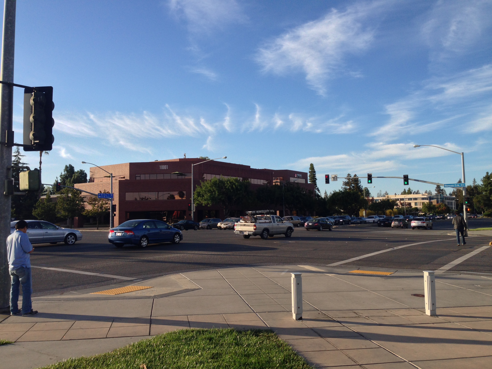
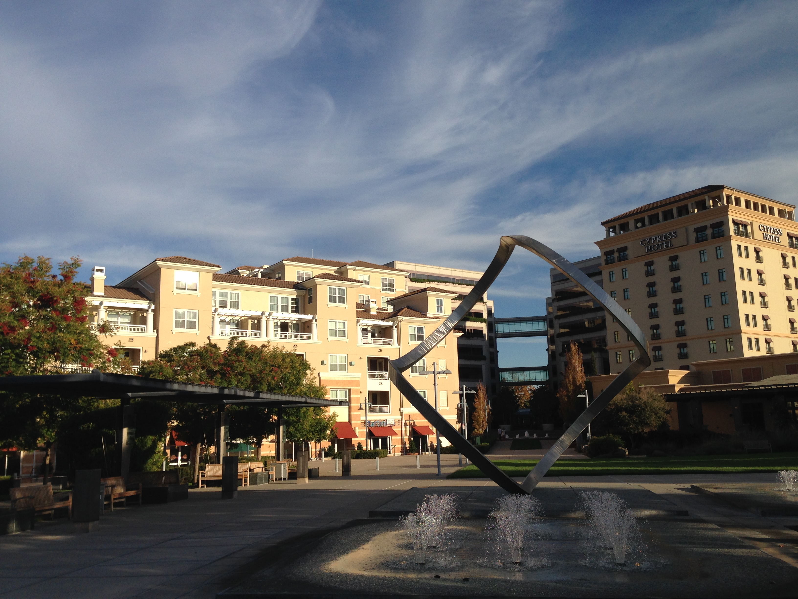

The night I arrived, I was too tired to do anything. I greeted my roommates, hung out with them for a socially acceptable amount of time, and then promptly fell face first onto my new bed.
Lights Out
The next morning started slowly, my roommates trickled out to work, leaving me alone with a whole day to explore the area. Fortunately, my stomach quickly came up with a very thoughtful plan, so I set out to find food.
Our apartment complex is aptly named Cupertino City Center, and is well positioned with all the essentials in walking distance. The two main streets De Anza Boulevard and Stevens Creek Boulevard cross less than 100 yards from the door, which are both plentifully lined with shops. Less than 15 minutes walk will bring you to a Target, Whole Foods, and "Sprouts Farmer's Market", with many smaller shops dotted in between.
 Seriously, these are BIG streets.
Not wanting to keep my stomach waiting, I went for the familiar option, and picked up some cereal and other provisions at Target, enjoying the crisp California air along the way. Before setting out, I noticed there was a bagel shop nearby: "Noah's New York Bagels". Fresh from the East Coast, I was eager to discover if these Westerners could boil a good bagel, so I rushed in to make an order, but was disappointed to find that it was a chain in the style of Einstein Bros. Bagels. Crestfallen, I settled for a chintzy chocolate chip bagel and an outrageously expensive orange juice before heading back to the apartment.
 The exterior plaza leading to my fancy new place. The sculpture is named "Perspectives".
Once there, I tried to take in my surroundings. The apartment surely lives up to its "luxury" designation, with hardwood floors, granite countertops, and plenty of fancy furnishings. My bedroom (I get to share the Master), has floor-to-ceiling mirror doors on the closet and an adjoining bathroom. The kitchen came with a full-set of cookware (including kettle), and my favorite: a dishwasher!
Not wanting to waste my first exploration day, I left the apartment to check out the Cupertino Civic Center, just 10 minutes south of the apartment.
While my apartment (and adjoining buildings) are called Cupertino City Center, the City Hall, Community Center, and Public Library all reside in Cupertino Civic Center. Together, the three buildings surround a scenic plaza, and neighbor a large, open field, which was set up for cricket when I walked by.
I wandered through the library, impressed by their large collection and thoughtful presentation, and resolved to come back and acquire a library card as soon as possible.
By the time I was done, kids were starting to stream down the streets on bicycles and in packs, school seemed to be letting out for the day. Curious, I backtracked their trail, quickly losing myself in residential suburbia. Eventually, I found a nearby elementary and middle school, complete with crossing guard and all. Not wanting to be a creepy 20-something on an elementary school campus, I pressed on, and lazily meandered back in the general direction of City Center.
By now, I was fairly tired of walking, so I took some more time to settle in and relax back at the apartment, waiting for my roommates to get done with work. Once they got home, we went out for dinner at a restaurant called BJ's, a fairly large place for somewhat fancy pub food, right outside of Apple's main campus. It was a quick 15 minute walk, and the food was acceptable. Fried Calimari for the table that had a nice crisp and wasn't too rubbery, with plenteous portions on our burgers and ribs.
After almost lapsing into food coma, we made our way back, and were greeted by the warm, fuzzy neon sign of Donut Wheel, a somewhat sketchy, but entirely delicious 24-hour, cash-only Donut Shop. Perfect pickings for 3 college interns late on a Friday night. A nice family with a small child helped us learn the etiquette, and we returned home with a half-dozen donuts, ready a fun-filled Saturday morning.